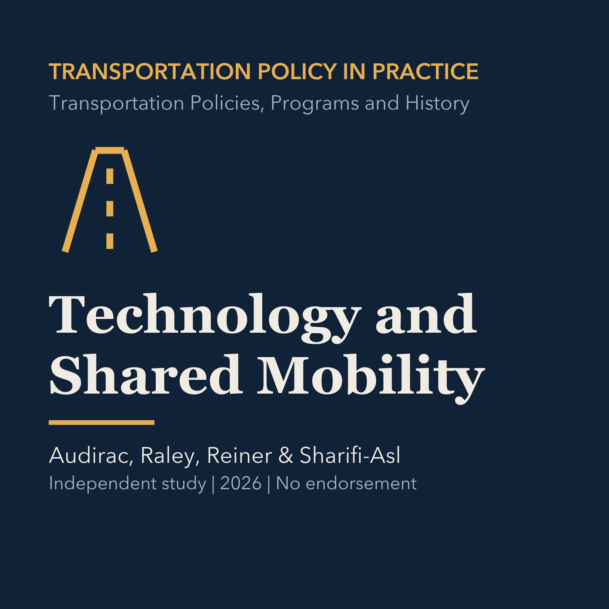

EPISODE 08
Technology, Shared Mobility, and Smart Cities
Evaluates digital mobility, automation, shared services, governance, privacy, and equity, then applies the questions locally.

- Stable GUID
2b72b77e-f3b6-53cb-b37f-5466f2267dce- Release
- transportation-policies-programs-history-v2026.2
- SHA-256
e267e04546683093dfb50ac89565954f2de16191796d1073a19236018efa038d